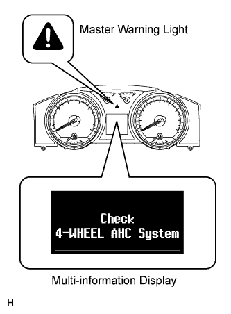
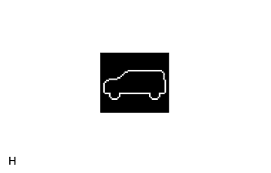

ACTIVE HEIGHT CONTROL SUSPENSION > DIAGNOSIS SYSTEM |
| DIAGNOSIS SYSTEM |
 |
If a malfunction is detected in the active height control suspension, the master warning light illuminates, and "Check 4-WHEEL AHC System" is displayed on the multi-information display.
Test mode
By switching from normal mode into test mode, the front acceleration sensor, rear acceleration sensor and suspension control switch can be inspected (Click here).
| INITIAL CHECK |
 |
The initial check operates for approximately 3 seconds after the engine switch is turned on (IG). Therefore, the vehicle height information does not display on the height control indicator in the multi-information display. After the initial check is finished, the vehicle height information is displayed.